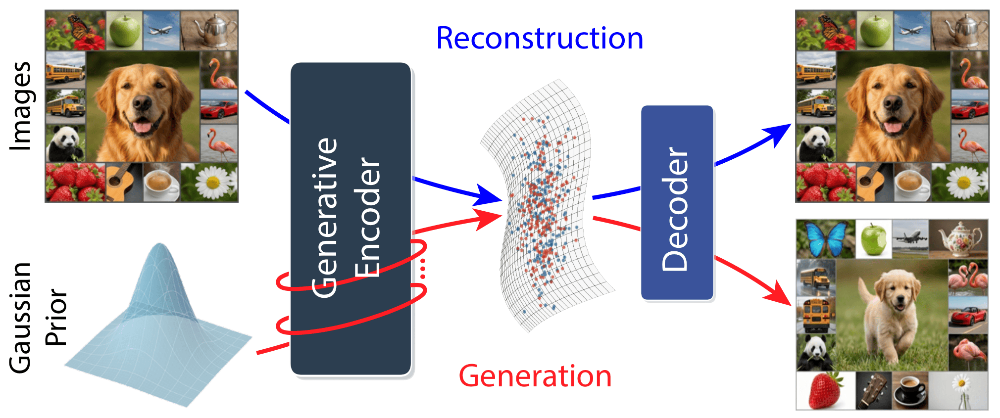
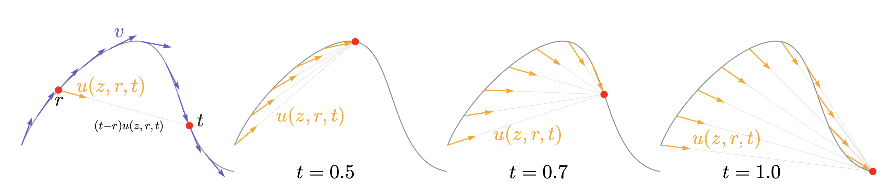
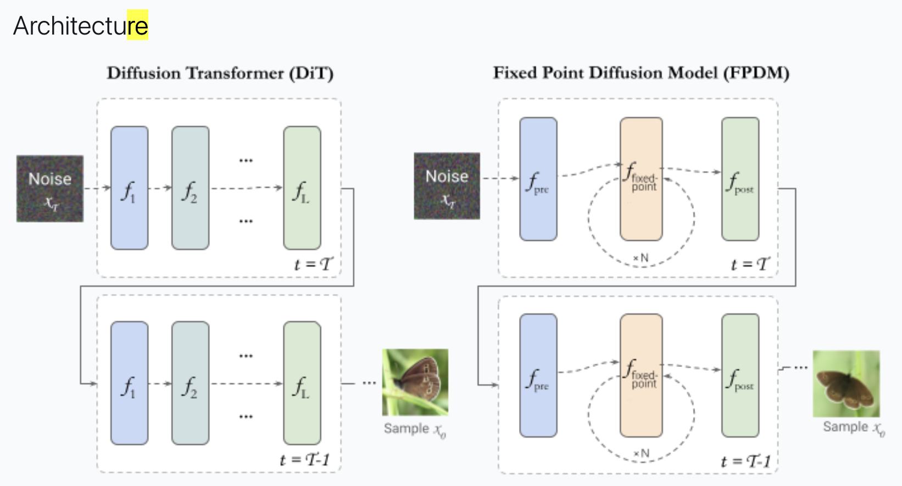
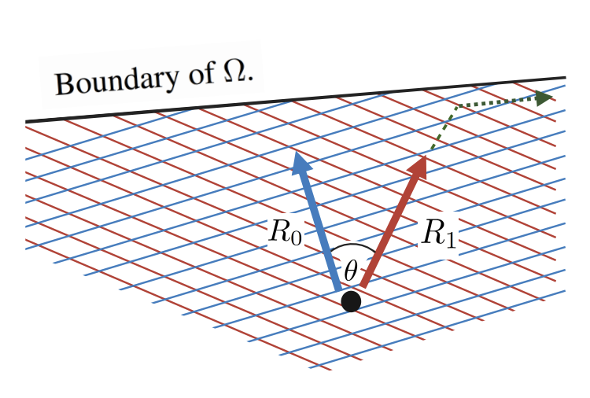
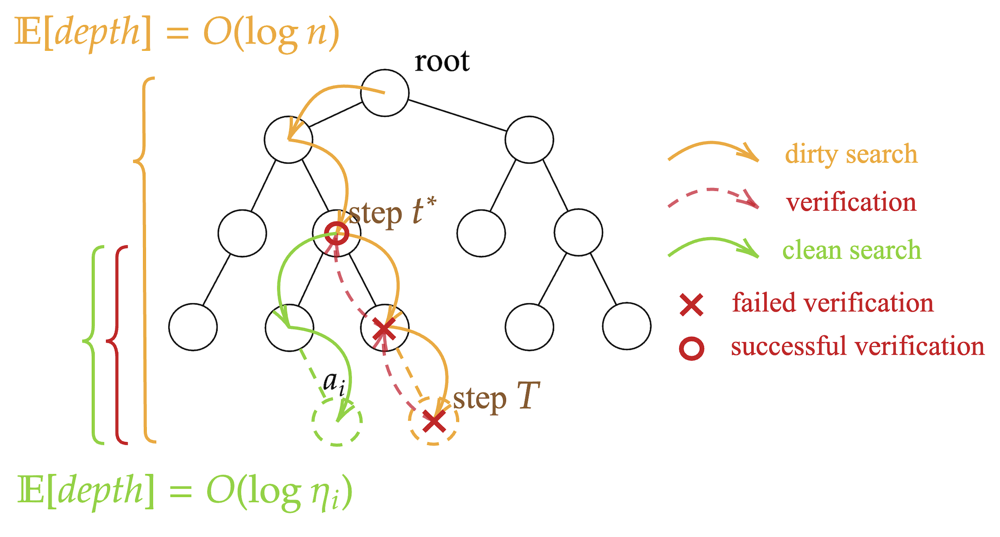
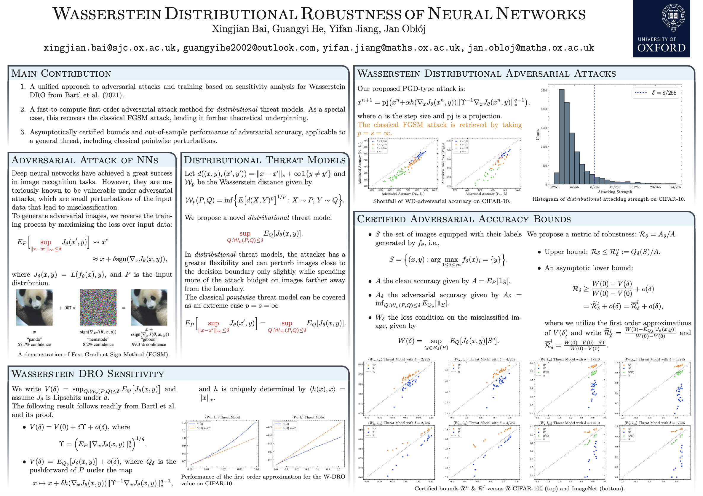

Xingjian Bai · 白行健
Ph.D. Student · MIT CSAIL
Hello! I am a second-year Ph.D. student at MIT, working with Prof. Kaiming He. I received my master's and bachelor's degrees in Mathematics and Computer Science from the University of Oxford. My research focuses on understanding and empirically building stronger generative models — recently, flows, diffusion, and video world models. Over the years, I have also explored theoretical computer science, with a focus on online and learning-augmented algorithms. More broadly, I am drawn to research that is both scientifically impactful and intellectually stimulating.
During my time at Oxford, I had the privilege of working with Prof. Jan Obloj, Prof. Christian Coester, Prof. Christian Rupprecht, and Luke Melas-Kyriazi. I also spent a rewarding summer at Stanford, collaborating with Prof. Jiajun Wu, Dr. Weiyu Liu, and Joy Hsu. Outside of my academic pursuits, I enjoy jogging and playing tennis. I also engage in algorithmic programming competitions.
Collaboration. If you would like to discuss anything related to research, startups, or life in general, I would be eager to hear from you. Please feel free to reach out via email.
News
- Mar 2026 Check out our new preprint, UNITE, on single-stage joint training of tokenization and latent diffusion.
- Feb 2026 Our paper, Causality in Video Diffusers is Separable from Denoising, is accepted at CVPR 2026!
- May 2025 Our paper, Mean Flows for One-step Generative Modeling, is accepted at NeurIPS 2025 as an oral presentation.
- Oct 2024 Our paper, Unweighted Layered Graph Traversal, is accepted at SODA 2025!
- Jun 2024 My master's thesis, Efficient and Adaptive Image Generation with Fixed Point Diffusion Models, has won the Departmental Prize for the Best Computer Science Project.
- Feb 2024 Our paper, Fixed Point Diffusion Models, is accepted at CVPR 2024!
Publications
-

-

-

-

-

-

-
